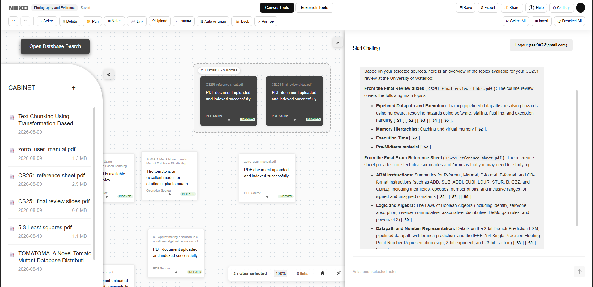

NEXO — Multimodal AI Research Platform
A full-stack research environment that combines a visual workspace, source-grounded AI, document retrieval, and multimodal reasoning across documents and images.
My contribution
Co-led the platform from product direction through AI/backend integration, connecting a React frontend to FastAPI/Python services and PostgreSQL-backed research workflows.
AI pipeline
OCR → chunking → embeddings → vector retrieval → grounded generation, plus a 7B vision-language model using PyTorch and Hugging Face Transformers.
Live Demo ↗
Hult Prize National Round